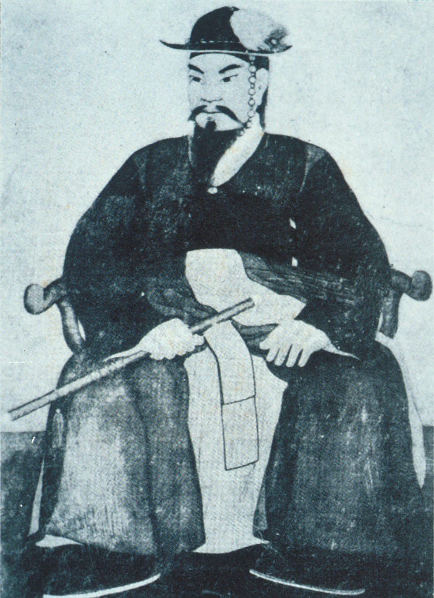
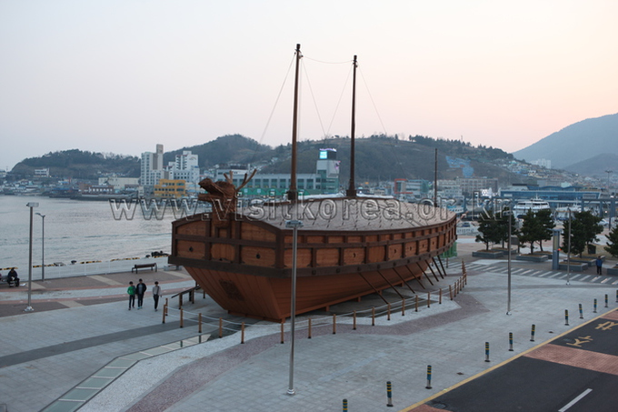
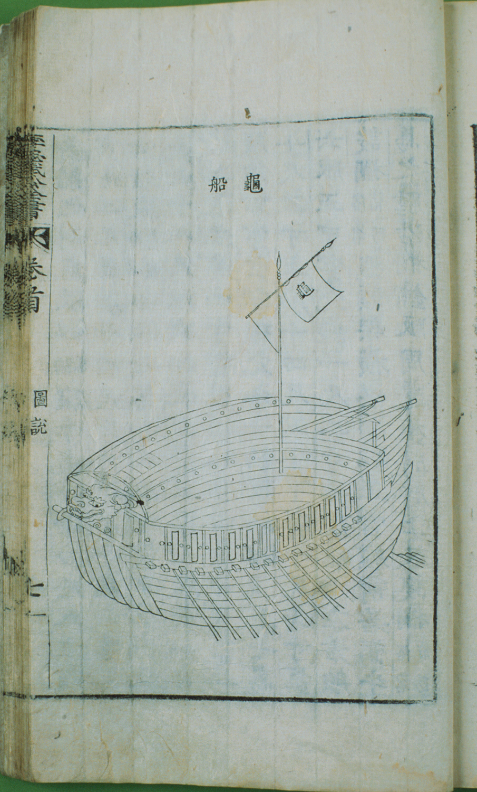
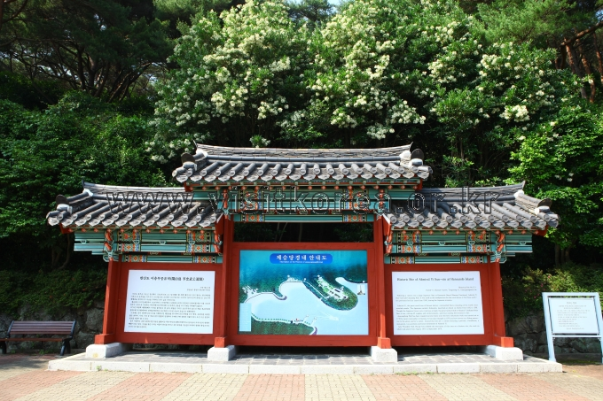
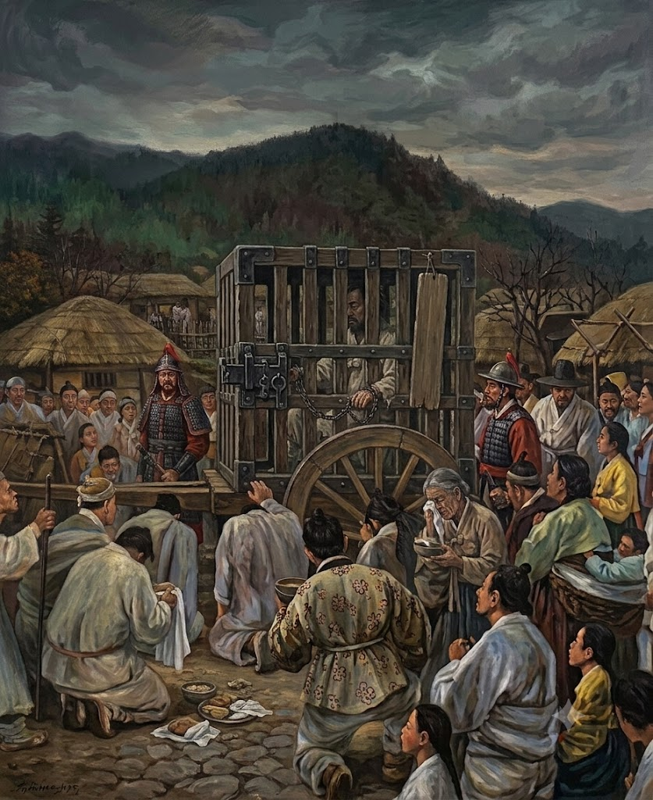
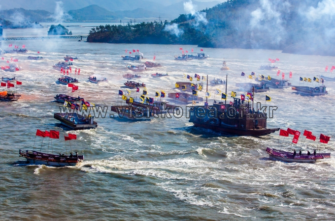
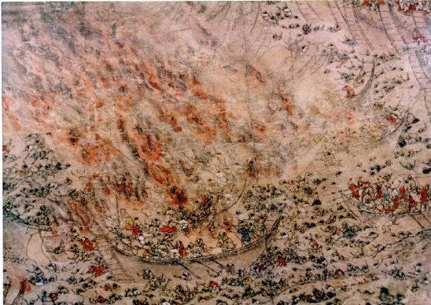
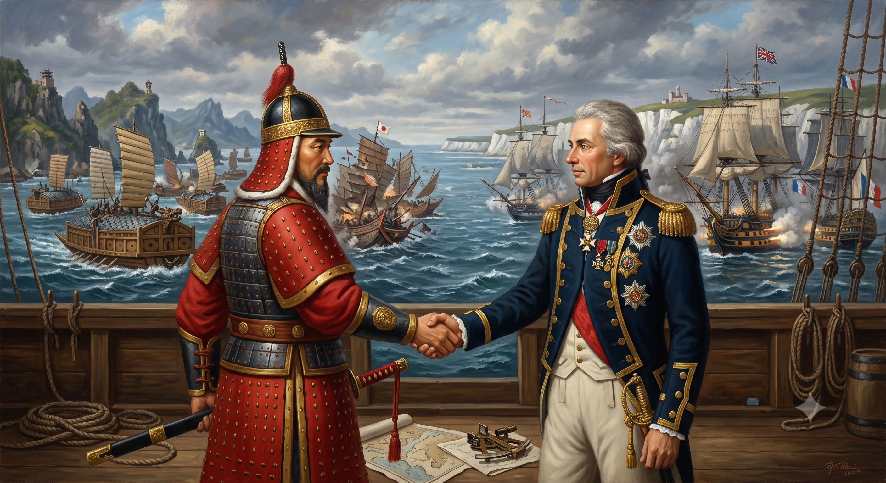
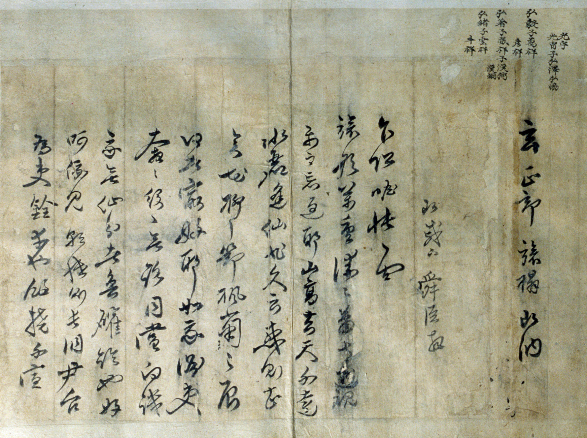
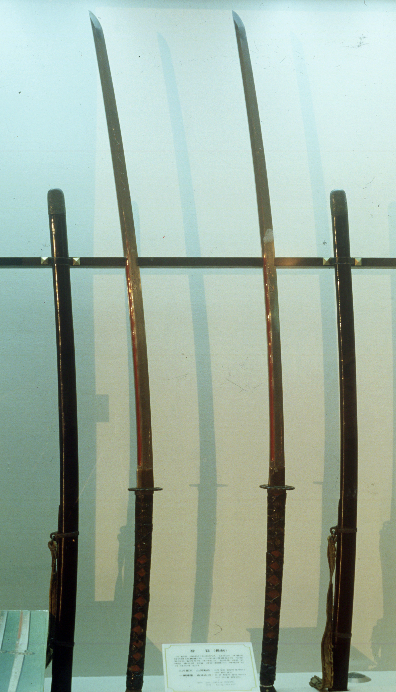

Yi Sun-sin
When the land had fallen, he held the sea.
A Commander Made by Hardship
Yi Sun-sin was born in 1545 in Hanseong, today's Seoul, into a family whose fortunes had fallen after his grandfather was caught up in a political purge.
His path into the army was not easy. At 28 he sat the military examination, but his horse stumbled and he was thrown, injuring his leg and failing the test. He kept training and passed four years later, in 1576.
On the northern frontier he asked for more troops to defend his post. The request was refused, and when raiders struck, he was blamed. Rather than accept an unjust verdict, he argued his case to the end. He escaped execution, but was stripped of rank and made to serve as a common soldier — the first of two times this would happen to him.
In 1591, a year before the war, he was promoted far above his rank to command the Left Navy of Jeolla Province, a decision that drew objections at court. He used that year to build warships, gather weapons, and secure food for his men. When the invasion came, he was ready.

Seven Years at Sea, at a Glance
On the 13th day of the 4th month of 1592, Japanese forces landed at Busan. The navies of Gyeongsang Province collapsed almost at once. The Japanese planned to sail around the peninsula and supply their armies by sea. Yi Sun-sin's fleet stood in the way.
Dates follow the lunar calendar used in Joseon records.


A Roof of Spikes, a Dragon at the Bow
The turtle ship was a warship with its deck covered by a roof, studded with spikes to stop boarders, and a dragon's head at the bow. It led the charge at Sacheon in 1592, its first battle, and went on to break open enemy formations at Dangpo, Danghangpo and Hansan.
It is often called the world's first ironclad. Historians still debate this: Korean records from the war do not describe iron plating, while some scholars argue thin metal plates were added. What is not in doubt is the role it played.
In SEAMEN STORIES, this ship returns in 2047 as the Golden Turtle Ship.
Hansan Island
A Japanese fleet of about seventy ships under Wakisaka Yasuharu was anchored in Gyeonnaeryang, a narrow strait. Yi judged the waters too tight for his large warships and too close to land, where the enemy could escape ashore.
So he sent a few ships forward as bait. The Japanese gave chase into the open sea off Hansan Island — and found the Joseon fleet waiting, spread out in a wide arc like a crane opening its wings. The arc closed around them, and the cannon opened fire.
Of the enemy fleet, 59 ships were destroyed. The victory broke Japan's plan to move its armies and supplies along the western sea.

Betrayed by His Own Court
In 1593 Yi became the first Supreme Naval Commander of the Three Provinces. Four years later, a Japanese double agent fed the Korean court a false tip, and Yi was ordered to intercept a Japanese general at sea. He suspected a trap. The general had already landed.
Rivals at court seized the moment. Yi was arrested, taken to the capital and interrogated for about a month. He accused no one. Spared from execution, he was sent to serve once more as a common soldier. On the road south, he received news that his mother had died.
Months later, at Chilcheollyang, the fleet he had built was destroyed under his successor, Won Gyun. A navy that had numbered over 130 warships and some 13,000 men was all but wiped out. The court had no one else to turn to.

Myeongnyang
Restored to command, Yi found only twelve warships and about 120 men. The court told him to give up the sea and fight on land. He wrote back that for five or six years the navy alone had kept the enemy out of the southwest — and that he still had twelve ships. If they fought to the death, it could be done.
"I still have twelve ships."Yi Sun-sin's report to the court, 1597 (paraphrased from the Korean record)
One more ship joined, bringing his fleet to thirteen. He chose to meet the enemy in the Myeongnyang Strait — the Uldolmok — where the tidal current runs violently through a narrow channel. On the eve of battle he told his commanders, quoting an old military text:
"Those who resolve to die shall live. Those who seek to live shall die."Address to his commanders, the day before Myeongnyang
When the current turned in his favor, Yi attacked. Thirty-one Japanese ships were destroyed and the enemy commander Kurushima Michifusa was killed. The Japanese fleet withdrew.
Yi himself did not call it genius. In his diary he wrote that it had been "truly the grace of heaven."
Records differ slightly: some sources give twelve ships for the battle itself. The commonly accepted account is twelve ships at his reappointment and thirteen at Myeongnyang.

Rebuilding the Navy
After Myeongnyang, Yi moved his base to Gogeumdo Island. He set up farms and salt and fish trade to feed his men. Soldiers and refugees streamed back, and within months his base was stronger than it had been in the days of Hansan.
Noryang
By late 1598 the war was ending, and the Japanese gathered their ships to withdraw. Yi refused to let them leave unchallenged. He persuaded the reluctant Ming admiral Chen Lin to join the attack, and during the fighting he came to Chen Lin's rescue.
Leading from the front, Yi was struck by a stray bullet. His last order was to keep his death secret:
"The battle is at its height. Do not announce my death."Yi Sun-sin's last words, Noryang, 1598
Those beside him hid his body and kept the drums beating. His men fought on without knowing he had fallen, and the withdrawing fleet was heavily defeated. When the truth came out, it was said that the dead Yi Sun-sin had driven off the living enemy.

The battle ran through the night; Korean sources date it to the 18th or 19th day of the 11th lunar month of 1598.
How Others Saw Him
"A talent that could order heaven and earth; a merit that mended the sky and bathed the sun."
"Alas, that the court did not know how to use him, and never let him use his full talent."
"It is always difficult for Englishmen to admit that Nelson ever had an equal in his profession, but if any man is entitled to be so regarded, it should be this great naval commander … who never knew defeat and died in the presence of the enemy."

East and West
Ballard, a British admiral and naval historian, placed Yi beside Nelson more than a hundred years ago. SEAMEN STORIES begins from the same question he raised: what if these two commanders had stood on the same sea?

A Diary From the Front Line
Through the seven years of war, Yi kept a diary — the Nanjung Ilgi. It records battles, weather, supplies and his own grief and doubt, in his own hand. Together with his reports to the court, it is a National Treasure of Korea, and in 2013 it was added to UNESCO's Memory of the World Register.
He also wrote poetry. His verses from the camp at Hansan Island are still read in Korea today.
Remembered for Four Centuries
After his death, Yi was honored as a first-rank meritorious subject, and in 1793 he was posthumously named Chief State Councillor, the highest office in the kingdom. His posthumous title, Chungmu, means "Loyal and Martial."
Shrines were raised in his memory, the largest being Hyeonchungsa in Asan. His long swords, nearly two meters long, are preserved there as a designated Treasure of Korea. Today his statue stands at the heart of Seoul, on Gwanghwamun Square.

The Legend Returns
At Noryang, Yi Sun-sin gave his life and hid his death so that his men would win. In SEAMEN STORIES, that same choice — not technology, but sacrifice — is what awakens the Golden Turtle Ship.


- "이순신 (Yi Sun-sin)", Encyclopedia of Korean Culture, Academy of Korean Studies — encykorea.aks.ac.kr
- "이순신", "명량해전", "원균", Korean History Online (우리역사넷), National Institute of Korean History — contents.history.go.kr
- G. A. Ballard, The Influence of the Sea on the Political History of Japan (London: John Murray, 1921), pp. 66–67.
- UNESCO Memory of the World Register: Nanjung Ilgi: War Diary of Admiral Yi Sun-sin (inscribed 2013).
Image credits: Encyclopedia of Korean Culture, Academy of Korean Studies (KOGL) — Uldolmok, portrait, turtle ship drawing, Nanjung Ilgi, long swords; © Korea Tourism Organization (KOGL Type 1) — turtle ship replica, Jeseungdang (photo: 이범수), Myeongnyang reenactment (photo: 천기철), Hyeonchungsa (photo: 김지호); Noryang scroll painting (Jeongwae Gigong Dogwon) — public domain, via Wikimedia Commons; mood and comparison images — SEAMEN UNIVERSE.